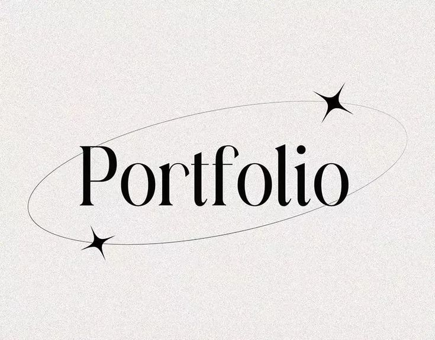

My Projects
A selection of things I've built while learning.
Personal Expense Tracker
This project involves recording and analysing personal expenses to understand spending habits. The goal is to organise expenses into categories and identify areas where money can be saved.
HTML · CSS3 · JavaScript